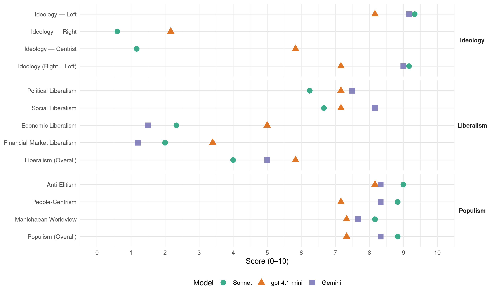

(Brazil, 1989)
manifesto_id 180230_198911
Get full text: This site shows derived annotations and short verbatim quotes only. The full manifesto text is © Manifesto Project / WZB — obtain it via manifesto-project.wzb.eu using the manifesto_id above.
Headline scores
| Dimension | Sonnet | gpt-4.1-mini | Gemini |
|---|---|---|---|
| Populism (Overall) | 8.8 | 7.3 | 8.3 |
| Anti-Elitism | 9.0 | 8.2 | 8.3 |
| People-Centrism | 8.8 | 7.2 | 8.3 |
| Manichaean Worldview | 8.2 | 7.3 | 7.7 |
| Ideology (Right − Left) | 9.2 | 7.2 | 9.0 |
| Liberalism (Overall) | 4.0 | 5.8 | 5.0 |
| Political Liberalism | 6.2 | 7.2 | 7.5 |
| Social Liberalism | 6.7 | 7.2 | 8.2 |
| Economic Liberalism | 2.3 | 5.0 | 1.5 |
| Financial-Market Liberalism | 2.0 | 3.4 | 1.2 |
Evidence per dimension
Economic Liberalism
Gemini · score 2.0 · verified · chunk 1
“neoliberalismo de fachada. Tão de fachada”
Estado mínimo, privatização, menos governo, pregam os porta-vozes de um neoliberalismo de fachada. Tão de fachada quanto
Gemini · score 2.0 · verified · chunk 2
“Intervenção estatal para regularizar certos mercados”
Intervenção estatal para regularizar certos mercados e desestimular movimentos especulativos
Gemini · score 1.0 · verified · chunk 3
“Estado deve planejar e orientar a vida econômica”
Romper a dependência financeira e tecnológica com o capitalismo internacional; Estado deve planejar e orientar a vida econômica, controlando os setores produtivos
Gemini · score 2.0 · verified · chunk 4
“exige o controle dos atuais oligopólios no setor agroindustrial”
desconcentração do poder político e econômico no campo envolve outras formas de intervenção estatal. Exige o controle dos atuais oligopólios no setor agroindustrial, com estímulo às pequenas e médias
Gemini · score 1.0 · verified · chunk 5
“combater os abusos dos grandes grupos econômicos”
rejeitar qualquer receita econômica recessiva, combater os abusos dos grandes grupos econômicos, aumentar os salários de
Gemini · score 1.0 · verified · chunk 6
“Deverão ser estatizados os serviços”
Deverão ser estatizados os serviços que funcionem como monopólios lucrativos, sem equivalentes no setor público
gpt-4.1-mini · score 5.0 · verified · chunk 1
“a política econômica do governo que excluía a classe trabalhadora do acesso à riqueza”
Despertei para a vida política nos anos 70, quando a ditadura impunha ao país, pela força , um modelo econômico que excluía a classe trabalhadora do acesso à riqueza criada com nosso suor A luta sindical estava proibida pela repressão e por uma legislação que atrelava nossas entidades ao governo.
gpt-4.1-mini · score 6.0 · verified · chunk 2
“política industrial voltada para atender o consumo de massas, a modernização do parque produtivo”
Política industrial voltada para atender o consumo de massas, a modernização do parque produtivo e a absorção de ciência e tecnologia produzidas no Brasil.
gpt-4.1-mini · score 3.0 · verified · chunk 3
“Estado deve planejar e orientar a vida econômica, controlando os setores produtivos”
Estado deve planejar e orientar a vida econômica, controlando os setores produtivos e financeiros essenciais; Distribuição de renda para acabar com a miséria, reduzir as desigualdades entre as regiões, repartir os benefícios do desenvolvimento, buscando uma política de emprego para todos.
gpt-4.1-mini · score 5.0 · verified · chunk 4
“o Estado estimulará a descentralização da agroindústria”
O Estado estimulará a descentralização da agroindústria, financiando a criação de unidades de beneficiamento, armazenamento e transformação próximas a áreas diversificadas e sob o controle de grupos associativos de pequenos e médios produtores.
gpt-4.1-mini · score 5.0 · mixed · chunk 5
“combater os abusos dos grandes grupos econômicos”
Para isso, é necessário suspender o pagamento da dívida externa, rejeitar qualquer receita econômica recessiva, combater os abusos dos grandes grupos econômicos, aumentar os salários de base em termos reais.
gpt-4.1-mini · score 6.0 · verified · chunk 6
“subsidiar o desenvolvimento de um amplo setor privado de prestação de assistência médica, com recursos provenientes da Previdência”
O Estado pouco investiu na implementação de serviços públicos, preferindo subsidiar o desenvolvimento de um amplo setor privado de prestação de assistência médica, com recursos provenientes da Previdência. Isso foi facilitado pela exclusão dos trabalhadores no acompanhamento e gestão dos organismos da Previdência, bem como pela criação de elos entre a tecnoburocracia estatal e os grupos empresariais da área de saúde.
Sonnet · score 3.0 · verified · chunk 1
“contra a privatização da Telebrás, da Embratel”
É a visão de quem se posiciona contra a privatização da Telebrás, da Embratel, da Empresa Brasileira de Correios e Telégrafos e a favor da administração dessas estatais com a participação dos trabalhadores.
Sonnet · score 2.0 · verified · chunk 2
“Suspensão e revisão da política de privatização indiscriminada”
Suspensão e revisão da política de privatização indiscriminada. Criação de uma holding do sistema produtivo estatal, tendo como objetivo imediato o saneamento e a recuperação das empresas que o constituem.
Sonnet · score 1.0 · verified · chunk 3
“controle dos setores produtivos e financeiros”
Generalização da prática de planejamento, mantendo o controle estatal sobre os setores produtivos e financeiros: fundamentais para sustentar o crescimento a longo prazo.
Sonnet · score 3.0 · verified · chunk 4
“ficando para os grandes o ‘livre mercado’”
Crédito, investimentos e infra-estrutura, assistência técnica, garantia de comercialização e seguro agrícola, serão garantidos aos pequenos e médios produtores, ficando para os grandes o ‘livre mercado’.
Sonnet · score 3.0 · verified · chunk 5
“ampla liberdade de ação para agentes privados”
ampla liberdade de ação para agentes privados, com a intermediação financeira se sobrepondo à livre associação dos interessados; diversos setores do empresariado passaram a ter uma fonte de lucros certos
Sonnet · score 2.0 · verified · chunk 6
“Deverão ser estatizados os serviços que funcionem como monopólios lucrativos”
O setor privado que se construiu e se mantém financiado pelo setor público deve ser tratado com o máximo rigor. Deverão ser estatizados os serviços que funcionem como monopólios lucrativos, sem equivalentes no setor público, assim como setores estratégicos da indústria farmacêutica e de equipamentos.
Financial-Market Liberalism
Gemini · score 1.0 · verified · chunk 1
“Suspender os atuais acordos com o FMI”
Por isso, pretendemos: Suspender os atuais acordos com o FMI e o pagamento do serviço da dívida externa
Gemini · score 1.0 · verified · chunk 2
“Reforma do sistema bancário”
Reforma do sistema bancário, de modo a estimular a sua desconcentração
Gemini · score 1.0 · verified · chunk 3
“intervir de várias formas no sistema, inclusive, podendo chegar à estatização”
ganham super-lucros sem cumprir sua finalidade que é financiar a produção e os investimentos. Para conseguir isso é necessário intervir de várias formas no sistema, inclusive, podendo chegar à estatização.
Gemini · score 2.0 · verified · chunk 4
“retirará ainda os privilégios bancários que beneficiam latifundiários”
punindo a propriedade ociosa. Retirará ainda os privilégios bancários que beneficiam latifundiários e grandes empresas, executando suas dívidas ou negociando
Gemini · score 1.0 · verified · chunk 5
“dominado por uma lógica eminentemente bancária”
Em resumo: dominado por uma lógica eminentemente bancária e sem dispor de recursos
gpt-4.1-mini · score 4.0 · verified · chunk 1
“combate à corrupção, transparência e controle social sobre a economia”
A transparência e a ampla participação dos cidadãos na gestão da coisa pública são os pressupostos básicos das reformas administrativas que aplicaremos, em benefício da racionalização, agilização e democratização do aparelho estatal. … Incentivo à criação de mecanismos de controle social sobre a economia.
gpt-4.1-mini · score 4.0 · verified · chunk 2
“combate ao caráter parasitário do sistema bancário”
Adoção de um programa de emergência contra a sonegação e a evasão tributária, combinando medidas administrativas e legais. Como se vê, nossa proposta procura combinar a suspensão do pagamento da dívida externa (que reduzirá a necessidade de o setor público comprar imensas quantidades de dólares dos exportadores), a abertura de novos espaços para investimentos produtivos (visando deslocar para eles os recursos hoje aplicados em títulos), o aumento da carga tributária líquida (com uma sensível diminuição na necessidade de venda de títulos) e a reforma financeira (com o combate ao caráter parasitário do sistema bancário).
gpt-4.1-mini · score 2.0 · verified · chunk 3
“gerenciamento do sistema financeiro agirá sobre os bancos privados que ganham super-lucros”
O gerenciamento do sistema financeiro agirá sobre os bancos privados que ganham super-lucros sem cumprir sua finalidade que é financiar a produção e os investimentos. Para conseguir isso é necessário intervir de várias formas no sistema, inclusive, podendo chegar à estatização.
gpt-4.1-mini · score 4.0 · verified · chunk 4
“o sistema financeiro da habitação (SFH) e o seu banco (BNH)”
Logo depois do golpe militar de 1964, formaram-se o Sistema Financeiro da Habitação (SFH) e o seu banco (BNH), destinados (diziam) a produzir em larga escala moradias para a população de baixa renda.
gpt-4.1-mini · score 3.0 · verified · chunk 5
“fuga ilegal de capitais de verá atingir 10,4 bilhões de dólares”
Neste ano, a fuga ilegal de capitais deverá atingir 10,4 bilhões de dólares, elevando o estoque total de dólares que deixaram o país nesta década para cerca de 40 bilhões.
Sonnet · score 2.0 · verified · chunk 1
“Suspender os atuais acordos com o FMI”
Suspender os atuais acordos com o FMI e o pagamento do serviço da dívida externa, interrompendo assim a drenagem de recursos para o exterior.
Sonnet · score 2.0 · verified · chunk 2
“inclusive estatizações, se medidas deste tipo forem necessárias”
Aumentaremos o controle sobre os bancos através de mecanismos legais de fiscalização excercidos pelo Banco Central, recorrendo a várias formas de intervenção, inclusive estatizações, se medidas deste tipo forem necessárias.
Sonnet · score 1.0 · verified · chunk 3
“podendo chegar à estatização”
Para conseguir isso é necessário intervir de várias formas no sistema, inclusive, podendo chegar à estatização.
Sonnet · score 3.0 · verified · chunk 4
“dominado por uma lógica eminentemente bancária”
Em resumo: dominado por uma lógica eminentemente bancária e sem dispor de recursos a fundo perdido, o modelo do SFH se demonstrou incapaz de promover moradias para a população de baixa renda.
Sonnet · score 2.0 · verified · chunk 5
“acabar com a ciranda financeira”
combater os abusos dos grandes grupos econômicos, aumentar os salários de base em termos reais, democratizar as estatais e acabar com a ciranda financeira
Sonnet · score 2.0 · verified · chunk 6
“juros aos banqueiros internacionais”
Dentro do sistema capitalista, estamos condenados a ser uma nação periférica e marginal, fornecedora de matérias-primas, de mão-de-obra barata, de mercado às multinacionais, de juros aos banqueiros internacionais.
Political Liberalism
Gemini · score 8.0 · verified · chunk 1
“garantir ao Brasil uma Constituição democrática”
dificuldades que todos acompanharam daquela luta para garantir ao Brasil uma Constituição democrática e popular.
Gemini · score 7.0 · verified · chunk 2
“Poder Legislativo e a sociedade civil”
Daremos, à opinião pública brasileira, todos os esclarecimentos necessários. Teremos o Poder Legislativo e a sociedade civil como interlocutores.
Gemini · score 7.0 · verified · chunk 3
“plebiscito, referendo e a iniciativa popular”
representação dos sindicatos, por exemplo) - criar mecanismos como plebiscito, referendo e a iniciativa popular das leis; - adotar uma política de defesa
Gemini · score 7.0 · verified · chunk 4
“reforma agrária é indispensável para a construção de uma sociedade mais justa e democrática.”
MEDIDAS DE GOVERNO NADA SERÁ COMO ANTES A reforma agrária é indispensável para a construção de uma sociedade mais justa e democrática. Visa, antes de mais nada, romper o monopólio
Gemini · score 8.0 · verified · chunk 5
“alavancas poderosas para a conquista da democracia”
exercício da Presidência da República alavancas poderosas para a conquista da democracia, da justiça social e da
Gemini · score 8.0 · verified · chunk 6
“socialismo com democracia, com liberdade”
Construiremos um socialismo com democracia, com liberdade de organização, rejeitando as concepções burocráticas
gpt-4.1-mini · score 8.0 · verified · chunk 1
“Garantimos a liberdade de imprensa, mas ficou o monopólio dos meios de comunicação”
Conquistamos eleições diretas, mas a tutela militar permanece. Avançamos no campo dos direitos sociais, mas ficaram intocados o latifúndio e a concentração de riquezas. Garantimos a liberdade de imprensa, mas ficou o monopólio dos meios de comunicação. Consolidamos liberdades políticas, mas a ditadura do poder econômico continua.
gpt-4.1-mini · score 7.0 · verified · chunk 2
“democratização e transparência eficiência administrativa”
Vossa intenção é reestruturá-lo, em cinco direções principais: democratização e transparência eficiência administrativa, , fim do predomínio dos grandes grupos econômicos, implantação da reforma fiscal e saneamento das estatais.
gpt-4.1-mini · score 7.0 · verified · chunk 3
“defesa dos Direitos Humanos, apurando crimes, punindo os responsáveis”
adotar uma política de defesa dos Direitos Humanos, apurando crimes, punindo os responsáveis e restaurando a imagem das vítimas da repressão.
gpt-4.1-mini · score 7.0 · verified · chunk 4
“a reforma do Estado deve ser feita para apoiar a reforma da sociedade”
Dizemos: a reforma do Estado deve ser feita para apoiar a reforma da sociedade. Junto com ela. Dizemos mais: não haverá reforma alguma se as preferências dos capitalistas privados continuarem a definir o que o poder público faz ou deixa de fazer.
gpt-4.1-mini · score 7.0 · verified · chunk 5
“democratizar a escola e a sociedade”
A democratização do acesso implica a construção de mais unidades escolares, mas também a garantia de condições efetivas para a frequência. Concebemos a democratização da escola como um dos instrumentos essenciais para que a sociedade se tome melhor.
gpt-4.1-mini · score 7.0 · verified · chunk 6
“a Frente Brasil Popular apresentou suas propostas alternativas, por uma nova sociedade e por um novo governo, democrático e popular”
É com a consciência do desafio histórico que esta luta representa, e com a vontade política de enfrentar e vencer os obstáculos, com imensa confiança na força organizada dos trabalhadores e do povo que a Frente Brasil Popular apresentou suas propostas alternativas, por uma nova sociedade e por um novo governo, democrático e popular.
Sonnet · score 7.0 · verified · chunk 1
“soberania do poder civil, com extinção da tutela militar”
2. Promoção da plena soberania do poder civil, com extinção da tutela militar. 3. Reformas da legislação eleitoral e do sistema de representação parlamentar.
Sonnet · score 5.0 · mixed · chunk 2
“aprofundamento da democracia, usada de vez em quando”
Nossa arma: o aprofundamento da democracia, usada de vez em quando, ao longo de nossa história, apenas pelas elites.
Sonnet · score 5.0 · mixed · chunk 3
“democracia como governo da maioria”
afirmamos ser a democracia parte de nosso projeto, recuperando a idéia de democracia como governo da maioria provocando a ampla participação
Sonnet · score 6.0 · verified · chunk 4
“democratização da gestão, colocada ao alcance dos cidadãos”
Começa a haver democratização da gestão, colocada ao alcance dos cidadãos, cuja consciência, organização e luta definirão o futuro de São Paulo.
Sonnet · score 6.0 · verified · chunk 5
“democratização da gestão, colocada ao alcance dos cidadãos”
Começa a haver democratização da gestão, colocada ao alcance dos cidadãos, cuja consciência, organização e luta definirão o futuro de São Paulo
Sonnet · score 6.0 · verified · chunk 6
“Construiremos um socialismo com democracia”
Construiremos um socialismo com democracia, com liberdade de organização, rejeitando as concepções burocráticas e a visão do partido único.
Liberalism (Overall)
Gemini · score 5.0 · verified · chunk 1
“garantir ao Brasil uma Constituição democrática”
dificuldades que todos acompanharam daquela luta para garantir ao Brasil uma Constituição democrática e popular.
Gemini · score 5.0 · verified · chunk 2
“Poder Legislativo e a sociedade civil”
Daremos, à opinião pública brasileira, todos os esclarecimentos necessários. Teremos o Poder Legislativo e a sociedade civil como interlocutores.
Gemini · score 4.0 · verified · chunk 3
“Estado deve planejar e orientar a vida econômica”
Romper a dependência financeira e tecnológica com o capitalismo internacional; Estado deve planejar e orientar a vida econômica, controlando os setores produtivos
Gemini · score 5.0 · verified · chunk 4
“reforma agrária é indispensável para a construção de uma sociedade mais justa e democrática.”
MEDIDAS DE GOVERNO NADA SERÁ COMO ANTES A reforma agrária é indispensável para a construção de uma sociedade mais justa e democrática. Visa, antes de mais nada, romper o monopólio
Gemini · score 5.0 · verified · chunk 5
“alavancas poderosas para a conquista da democracia”
exercício da Presidência da República alavancas poderosas para a conquista da democracia, da justiça social e da
Gemini · score 6.0 · verified · chunk 6
“socialismo com democracia, com liberdade”
Construiremos um socialismo com democracia, com liberdade de organização, rejeitando as concepções burocráticas
gpt-4.1-mini · score 6.0 · verified · chunk 1
“Garantimos a liberdade de imprensa, mas ficou o monopólio dos meios de comunicação”
Conquistamos eleições diretas, mas a tutela militar permanece. Avançamos no campo dos direitos sociais, mas ficaram intocados o latifúndio e a concentração de riquezas. Garantimos a liberdade de imprensa, mas ficou o monopólio dos meios de comunicação. Consolidamos liberdades políticas, mas a ditadura do poder econômico continua.
gpt-4.1-mini · score 6.0 · verified · chunk 2
“democratização e transparência eficiência administrativa”
Vossa intenção é reestruturá-lo, em cinco direções principais: democratização e transparência eficiência administrativa, , fim do predomínio dos grandes grupos econômicos, implantação da reforma fiscal e saneamento das estatais.
gpt-4.1-mini · score 5.0 · verified · chunk 3
“defesa dos Direitos Humanos, apurando crimes, punindo os responsáveis”
adotar uma política de defesa dos Direitos Humanos, apurando crimes, punindo os responsáveis e restaurando a imagem das vítimas da repressão.
gpt-4.1-mini · score 6.0 · verified · chunk 4
“o governo exigirá o cumprimento dos direitos trabalhistas em todo o território nacional”
Lançando mão de multas, desapropriações, cortes de crédito e outros mecanismos, o governo exigirá o cumprimento dos direitos trabalhistas em todo o território nacional.
gpt-4.1-mini · score 5.0 · verified · chunk 5
“democratizar a escola e a sociedade”
A democratização do acesso implica a construção de mais unidades escolares, mas também a garantia de condições efetivas para a frequência. Concebemos a democratização da escola como um dos instrumentos essenciais para que a sociedade se tome melhor.
gpt-4.1-mini · score 7.0 · verified · chunk 6
“O Estado pouco investiu na implementação de serviços públicos, preferindo subsidiar o desenvolvimento de um amplo setor privado”
O Estado pouco investiu na implementação de serviços públicos, preferindo subsidiar o desenvolvimento de um amplo setor privado de prestação de assistência médica, com recursos provenientes da Previdência. Isso foi facilitado pela exclusão dos trabalhadores no acompanhamento e gestão dos organismos da Previdência, bem como pela criação de elos entre a tecnoburocracia estatal e os grupos empresariais da área de saúde.
Sonnet · score 5.0 · verified · chunk 1
“Democracia sem adjetivos, sem condicionantes”
Todas as nossas propostas podem ser resumidas numa só palavra: democracia. Democracia sem adjetivos, sem condicionantes, sem segundas intenções.
Sonnet · score 3.0 · verified · chunk 2
“controle dos grandes grupos privados sobre o Estado”
Fim do controle dos grandes grupos privados sobre o Estado, com democratização e modernização de sua estrutura e recuperação de suas funções de planejamento e articulação da política econômica.
Sonnet · score 4.0 · mixed · chunk 3
“Suspensão dos acordos com o FMI”
Suspensão dos acordos com o FMI e do pagamento da dívida externa. Rejeição de políticas recessivas e contrárias à soberania nacional.
Sonnet · score 5.0 · mixed · chunk 4
“reforma do Estado deve ser feita para apoiar a reforma da sociedade”
Dizemos: a reforma do Estado deve ser feita para apoiar a reforma da sociedade. Junto com ela.
Sonnet · score 5.0 · mixed · chunk 5
“Propomos democracia e reformas sociais”
Nós não acreditamos nesse caminho, nem o desejamos para o país. Propomos democracia e reformas sociais. Recife chegará ao fim do século com 2,5 milhões de habitantes
Sonnet · score 5.0 · mixed · chunk 6
“direito de todos e dever do Estado”
Estamos decididos a resgatar a noção de saúde como um direito de todos e dever do Estado. É preciso assegurar o acesso universal, igualitário e gratuito às ações preventivas, curativas ou de reabilitação, sem qualquer discriminação.
Anti-Elitism
Gemini · score 9.0 · verified · chunk 1
“para a minoria dominante em nosso país”
Para os privilegiados, para a minoria dominante em nosso país, a democracia não interessa.
Gemini · score 8.0 · verified · chunk 2
“voracidade com que as elites tentam”
ele expressa a voracidade com que as elites tentam se apropriar de uma parcela cada vez maior
Gemini · score 9.0 · verified · chunk 3
“não foi tentado pelas elites políticas”
todas elas, competentemente, com apoio do povo, é o caminho que não foi tentado pelas elites políticas do Brasil, representantes dos interesses patronais.
Gemini · score 8.0 · verified · chunk 4
“Preocupados em negociar suas subvenções nos gabinetes governamentais, os usineiros não têm tempo de cumprir a lei”
sejam eles coletivos ou individuais. Preocupados em negociar suas subvenções nos gabinetes governamentais, os usineiros não têm tempo de cumprir a lei e honrar a palavra empenhada em negociações.
Gemini · score 8.0 · verified · chunk 5
“rejeição visceral de certas elites ao exercício da democracia”
revelou inesperadamente a rejeição visceral de certas elites ao exercício da democracia O voto popular, segundo ele
Gemini · score 8.0 · verified · chunk 6
“exploração dos trabalhadores pela elite”
Toda a nossa história política é a história da exploração dos trabalhadores pela elite que gerencia os interesses do capital nacional
gpt-4.1-mini · score 9.0 · verified · chunk 1
“os senhores da classe dominante brasileira, associados à ditadura militar”
Fomos assegurando na prática os nossos direitos, principalmente o direito de greve, de reunião e de manifestação. Os senhores da classe dominante brasileira, associados à ditadura militar, pretendiam que os trabalhadores lutassem tão-somente por melhores salários Mas nossa experiência sindical já havia mostrado que a ditadura militar e a inexistência de democracia representavam fortes barreiras contra a mudança daquele modelo econômico.
gpt-4.1-mini · score 8.0 · verified · chunk 2
“ordem internacional anárquica que precisa ser politicamente questionada”
Não devemos e não podemos pagar essa dívida ilegítima, continuando a transferir para os países desenvolvidos parte significativa da riqueza que produzimos aqui//. Essa situação reflete uma ordem internacional anárquica que precisa ser politicamente questionada por nosso país e pelos demais devedores do Terceiro Mundo. Por isso, pretendemos:
gpt-4.1-mini · score 9.0 · verified · chunk 3
“fim do controle dos grandes grupos privados sobre o Estado”
Fim do controle dos grandes grupos privados sobre o Estado, com democratização e modernização de sua estrutura e recuperação de suas funções de planejamento e articulação da política econômica.
gpt-4.1-mini · score 8.0 · verified · chunk 4
“os usineiros e donos de destilarias de álcool tinham acabado de introduzir um novo sistema de corte de cana”
Nenhuma palavra sobre as causas do movimento. Os usineiros e donos de destilarias de álcool tinham acabado de introduzir um novo sistema de corte de cana (“corte em sete ruas”), altamente prejudicial aos trabalhadores. Em seguida, veio o aumento exorbitante nas taxas cobradas pela água.
gpt-4.1-mini · score 8.0 · verified · chunk 5
“rejeição visceral de certas elites ao exercício da democracia”
O presidente da Fiesp revelou inesperadamente a rejeição visceral de certas elites ao exercício da democracia O voto popular, segundo ele, serve apenas para contestar as transações e escolhas feitas na cúpula.
gpt-4.1-mini · score 7.0 · verified · chunk 6
“a elite que gerencia os interesses do capital nacional e internacional”
Toda a nossa história política é a história da exploração dos trabalhadores pela elite que gerencia os interesses do capital nacional e internacional. Isso se reflete na má qualidade de vida da maioria do povo brasileiro, privado de saúde, de alimentação adequada, de instrução escolar, de moradias decentes, de trabalho estável, de transporte eficiente, de terra para plantar, de salários dignos.
Sonnet · score 9.0 · verified · chunk 1
“Para os privilegiados, para a minoria dominante”
Para os privilegiados, para a minoria dominante em nosso país, a democracia não interessa. O que interessa a eles é utilizar esse conceito como mero instrumento de defesa dos privilégios.
Sonnet · score 9.0 · verified · chunk 2
“elites industriais e financeiras, ávidas de lucros fáceis”
Centralizado, corrompido, ineficiente e inchado, ele resulta de várias décadas em que o poder tem sido exercido por uma aliança em que se misturam elites industriais e financeiras, ávidas de lucros fáceis, com elites agrárias, anti-reformistas até a medula.
Sonnet · score 9.0 · verified · chunk 3
“representantes dos interesses patronais”
o caminho que não foi tentado pelas elites políticas do Brasil, representantes dos interesses patronais. E esse o nosso caminho.
Sonnet · score 9.0 · verified · chunk 4
“grande parte do dinheiro público para lá deslocado cai no saco sem fundo das elites locais”
As desigualdades regionais não podem ser usadas para esconder a imensa e crescente desigualdade no próprio interior da sociedade nordestina. […] grande parte do dinheiro público para lá deslocado cai no saco sem fundo das elites locais.
Sonnet · score 9.0 · verified · chunk 5
“interesses da indústria de construção civil e da especulação imobiliária”
Em vez das grandes obras, de eficácia duvidosa e nitidamente ligadas aos interesses da indústria de construção civil e da especulação imobiliária, investe-se agora na manutenção
Sonnet · score 9.0 · verified · chunk 6
“a ganância capitalista, a criminosa ansiedade por lucros”
O descaso governamental, a ganância capitalista, a criminosa ansiedade por lucros vêm provocando o assassinato – a palavra é essa mesmo – de milhares de brasileiros
Ideology — Centrist
gpt-4.1-mini · score 6.0 · verified · chunk 1
“a democracia, para nós, não é formalidade passageira, nem dádiva dos de cima”
Ao “Estado mínimo” dos conservadores de ontem e de hoje, ao Estado que-tudo-pode dos totalitários de sempre, a Frente Brasil Popular opõe o Estado com democracia. Porque a democracia, para nós, não é formalidade passageira, nem dádiva dos de cima. É conquista fundamental, arrancada na luta contra o autoritarismo e os poderosos.
gpt-4.1-mini · score 6.0 · verified · chunk 2
“teremos o Poder Legislativo e a sociedade civil como interlocutores”
Daremos, à opinião pública brasileira, todos os esclarecimentos necessários. Teremos o Poder Legislativo e a sociedade civil como interlocutores. E contaremos com uma mobilização nacional.
gpt-4.1-mini · score 6.0 · verified · chunk 3
“com apoio do povo, é o caminho que não foi tentado pelas elites políticas”
Mexer em todas elas, competentemente, com apoio do povo, é o caminho que não foi tentado pelas elites políticas do Brasil, representantes dos interesses patronais.
gpt-4.1-mini · score 6.0 · verified · chunk 4
“a reforma do Estado deve ser feita para apoiar a reforma da sociedade”
Dizemos: a reforma do Estado deve ser feita para apoiar a reforma da sociedade. Junto com ela. Dizemos mais: não haverá reforma alguma se as preferências dos capitalistas privados continuarem a definir o que o poder público faz ou deixa de fazer.
gpt-4.1-mini · score 6.0 · verified · chunk 5
“democratização da gestão, colocada ao alcance dos cidadãos”
Começa a haver democratização da gestão, colocada ao alcance dos cidadãos, cuja consciência, organização e luta definirão o futuro de São Paulo.
gpt-4.1-mini · score 5.0 · verified · chunk 6
“a Frente Brasil Popular aceita o desafio de buscar, através de medidas concretas de governo”
Reconhecendo a opressão existente hoje e identificada com as lutas do movimento de mulheres, a Frente Brasil Popular aceita o desafio de buscar, através de medidas concretas de governo, os mecanismos que permitam às mulheres plena igualdade nas oportunidades do mercado de trabalho, na educação e em todos os aspectos da vida social.
Sonnet · score 1.0 · verified · chunk 1
“Democracia sem adjetivos, sem condicionantes”
Todas as nossas propostas podem ser resumidas numa só palavra: democracia. Democracia sem adjetivos, sem condicionantes, sem segundas intenções.
Sonnet · score 1.0 · verified · chunk 2
“não são partidos de ficção, legendas de aluguel”
PT, PSB e PCdoB não são partidos de ficção, legendas de aluguel, aglomerados sem forma e sem conteúdo, formados às vésperas de uma eleição.
Sonnet · score 1.0 · verified · chunk 3
“apoio do povo, é o caminho”
Mexer em todas elas, competentemente, com apoio do povo, é o caminho que não foi tentado pelas elites políticas do Brasil
Sonnet · score 2.0 · verified · chunk 4
“todos se apresentam como representantes da mudança”
A crise social é de tal profundidade, que todos se apresentam como representantes da mudança. Esses falam. Outros calam.
Sonnet · score 1.0 · verified · chunk 5
“democracia e reformas sociais”
Nós não acreditamos nesse caminho, nem o desejamos para o país. Propomos democracia e reformas sociais.
Sonnet · score 1.0 · verified · chunk 6
“Vamos mudar a cara do Brasil”
com imensa confiança na força organizada dos trabalhadores e do povo que a Frente Brasil Popular apresentou suas propostas alternativas, por uma nova sociedade e por um novo governo, democrático e popular. Vamos mudar a cara do Brasil!
Ideology — Left
Gemini · score 9.0 · verified · chunk 1
“reorganizar a sociedade brasileira, conferindo o papel”
eu diria: reorganizar a sociedade brasileira, conferindo o papel de direção àqueles que vivem no mundo do trabalho
Gemini · score 9.0 · verified · chunk 2
“construir a sociedade socialista”
derrotar os setores que sustentam o capitalismo e construir a sociedade socialista.
Gemini · score 10.0 · verified · chunk 3
“QUEREMOS CONSTRUIR UMA SOCIEDADE SOCIALISTA”
O projeto do PT é claro: QUEREMOS CONSTRUIR UMA SOCIEDADE SOCIALISTA neste País. E nossa definição histórica, cujos traços vão ganhando contornos
Gemini · score 9.0 · verified · chunk 4
“a reforma agrária, a democratização da propriedade e a distribuição de renda”
quebrar os “blocos regionais” das elites, pois a reforma agrária, a democratização da propriedade e a distribuição de renda são bandeiras que não têm fronteiras dentro do Brasil.
Gemini · score 9.0 · verified · chunk 5
“subordinada aos interesses da iniciativa privada”
custeada com recursos do povo mas subordinada aos interesses da iniciativa privada. O Estado se recolheu
Gemini · score 9.0 · verified · chunk 6
“socialismo é a alternativa histórica”
não há saída no sistema capitalista para a classe trabalhadora, o socialismo é a alternativa histórica nesta etapa da evolução
gpt-4.1-mini · score 9.0 · verified · chunk 1
“a necessidade de um choque de salários, um choque de distribuição de renda”
No primeiro fascículo desta série expusemos algumas delas: a necessidade de um choque de salários, um choque de distribuição de renda e um choque de dignidade no tratamento da questão da dívida externa No seguinte, mostramos argumentos irrefutáveis a favor da democratização da propriedade da terra neste país e da necessidade de um novo modelo agrícola, que garanta uma produção abundante de alimentos, sem agredir o meio ambiente.
gpt-4.1-mini · score 8.0 · verified · chunk 2
“redistribuição progressiva de renda”
Adotar, de forma articulada, medidas para estancar a fuga de capitais, para consolidar nossas reservas em moeda forte e para retomar o crescimento econômico, com a definição de um pacote de investimentos estratégicos, a retomada de gastos sociais e redistribuição progressiva de renda.
gpt-4.1-mini · score 9.0 · verified · chunk 3
“distribuição de renda para acabar com a miséria, reduzir as desigualdades”
Distribuição de renda para acabar com a miséria, reduzir as desigualdades entre as regiões, repartir os benefícios do desenvolvimento, buscando uma política de emprego para todos.
gpt-4.1-mini · score 8.0 · verified · chunk 4
“a reforma agrária é indispensável para a construção de uma sociedade mais justa e democrática”
A reforma agrária é indispensável para a construção de uma sociedade mais justa e democrática. Visa, antes de mais nada, romper o monopólio da terra e lançar as bases de um novo padrão de desenvolvimento para a agricultura e toda a economia brasileira.
gpt-4.1-mini · score 8.0 · verified · chunk 5
“distribuir a renda nacional e retomar o ritmo histórico de crescimento”
Vale a pena uma pequena síntese. O primeiro fascículo discutiu a necessidade de adotarmos um novo padrão de desenvolvimento econômico, que garanta duas coisas fundamentais: distribuir a renda nacional e retomar o ritmo histórico de crescimento.
gpt-4.1-mini · score 7.0 · verified · chunk 6
“a ganância capitalista, em sua variante mais selvagem e concentradora”
A sociedade guiada pela ganância capitalista, em sua variante mais selvagem e concentradora, não teria porque manifestar interesse especial por quem ainda não está em idade de produzir lucros, mesmo quando se trata de uma criança de padrão social superior.
Sonnet · score 9.0 · verified · chunk 1
“choque de distribuição de renda”
a necessidade de um choque de salários, um choque de distribuição de renda e um choque de dignidade no tratamento da questão da dívida externa
Sonnet · score 10.0 · verified · chunk 2
“QUEREMOS CONSTRUIR UMA SOCIEDADE SOCIALISTA”
O projeto do PT é claro: QUEREMOS CONSTRUIR UMA SOCIEDADE SOCIALISTA neste País. E nossa definição histórica, cujos traços vão ganhando contornos mais nítidos na medida em que amadurece nossa reflexão partidária.
Sonnet · score 10.0 · verified · chunk 3
“QUEREMOS CONSTRUIR UMA SOCIEDADE SOCIALISTA”
O projeto do PT é claro: QUEREMOS CONSTRUIR UMA SOCIEDADE SOCIALISTA neste País. E nossa definição histórica, cujos traços vão ganhando contornos mais nítidos
Sonnet · score 9.0 · verified · chunk 4
“reforma agrária, a democratização da propriedade e a distribuição de renda”
Começam a quebrar os ‘blocos regionais’ das elites, pois a reforma agrária, a democratização da propriedade e a distribuição de renda são bandeiras que não têm fronteiras dentro do Brasil.
Sonnet · score 9.0 · verified · chunk 5
“Nosso objetivo é o socialismo”
Nosso objetivo é o socialismo, ou seja, uma sociedade em que o trabalho coletivo seja usado em benefício de todos, em que a terra não seja objeto de especulação
Sonnet · score 9.0 · verified · chunk 6
“o socialismo é a alternativa histórica”
Se não há saída no sistema capitalista para a classe trabalhadora, o socialismo é a alternativa histórica nesta etapa da evolução da humanidade.
Ideology (Right − Left)
Gemini · score 9.0 · verified · chunk 1
“reorganizar a sociedade brasileira, conferindo o papel”
eu diria: reorganizar a sociedade brasileira, conferindo o papel de direção àqueles que vivem no mundo do trabalho
Gemini · score 9.0 · verified · chunk 2
“construir a sociedade socialista”
derrotar os setores que sustentam o capitalismo e construir a sociedade socialista.
Gemini · score 9.0 · verified · chunk 3
“QUEREMOS CONSTRUIR UMA SOCIEDADE SOCIALISTA”
O projeto do PT é claro: QUEREMOS CONSTRUIR UMA SOCIEDADE SOCIALISTA neste País. E nossa definição histórica, cujos traços vão ganhando contornos
Gemini · score 9.0 · verified · chunk 4
“a reforma do Estado deve ser feita para apoiar a reforma da sociedade.”
usarem isso como pretexto para manter a sociedade tal como está. Nós, não. Dizemos: a reforma do Estado deve ser feita para apoiar a reforma da sociedade. Junto com ela.
Gemini · score 9.0 · verified · chunk 5
“subordinada aos interesses da iniciativa privada”
custeada com recursos do povo mas subordinada aos interesses da iniciativa privada. O Estado se recolheu
Gemini · score 9.0 · verified · chunk 6
“socialismo é a alternativa histórica”
não há saída no sistema capitalista para a classe trabalhadora, o socialismo é a alternativa histórica nesta etapa da evolução
gpt-4.1-mini · score 8.0 · verified · chunk 1
“a necessidade de um choque de salários, um choque de distribuição de renda”
No primeiro fascículo desta série expusemos algumas delas: a necessidade de um choque de salários, um choque de distribuição de renda e um choque de dignidade no tratamento da questão da dívida externa No seguinte, mostramos argumentos irrefutáveis a favor da democratização da propriedade da terra neste país e da necessidade de um novo modelo agrícola, que garanta uma produção abundante de alimentos, sem agredir o meio ambiente.
gpt-4.1-mini · score 7.0 · verified · chunk 2
“ordem internacional anárquica que precisa ser politicamente questionada”
Não devemos e não podemos pagar essa dívida ilegítima, continuando a transferir para os países desenvolvidos parte significativa da riqueza que produzimos aqui//. Essa situação reflete uma ordem internacional anárquica que precisa ser politicamente questionada por nosso país e pelos demais devedores do Terceiro Mundo. Por isso, pretendemos:
gpt-4.1-mini · score 8.0 · verified · chunk 3
“distribuição de renda para acabar com a miséria, reduzir as desigualdades”
Distribuição de renda para acabar com a miséria, reduzir as desigualdades entre as regiões, repartir os benefícios do desenvolvimento, buscando uma política de emprego para todos.
gpt-4.1-mini · score 7.0 · verified · chunk 4
“a reforma agrária é indispensável para a construção de uma sociedade mais justa e democrática”
A reforma agrária é indispensável para a construção de uma sociedade mais justa e democrática. Visa, antes de mais nada, romper o monopólio da terra e lançar as bases de um novo padrão de desenvolvimento para a agricultura e toda a economia brasileira.
gpt-4.1-mini · score 7.0 · verified · chunk 5
“rejeição visceral de certas elites ao exercício da democracia”
O presidente da Fiesp revelou inesperadamente a rejeição visceral de certas elites ao exercício da democracia O voto popular, segundo ele, serve apenas para contestar as transações e escolhas feitas na cúpula.
gpt-4.1-mini · score 6.0 · verified · chunk 6
“a Frente Brasil Popular apresentou suas propostas alternativas, por uma nova sociedade”
É com a consciência do desafio histórico que esta luta representa, e com a vontade política de enfrentar e vencer os obstáculos, com imensa confiança na força organizada dos trabalhadores e do povo que a Frente Brasil Popular apresentou suas propostas alternativas, por uma nova sociedade e por um novo governo, democrático e popular.
Sonnet · score 9.0 · verified · chunk 1
“reorganizar a sociedade brasileira, conferindo o papel”
reorganizar a sociedade brasileira, conferindo o papel de direção àqueles que vivem no mundo do trabalho e da cultura. É uma proposta radical
Sonnet · score 10.0 · verified · chunk 2
“a posse e o controle de todas as riquezas”
queremos a posse e o controle de todas as riquezas, de toda a produção e dos meios que a produzem sob o controle dos trabalhadores; queremos a plena democracia e a participação real em todas as decisões importantes.
Sonnet · score 9.0 · verified · chunk 3
“a posse e o controle de todas as riquezas”
queremos a posse e o controle de todas as riquezas, de toda a produção e dos meios que a produzem sob o controle dos trabalhadores
Sonnet · score 9.0 · verified · chunk 4
“anti-corporativa, redistribuição, igualdade social”
Não haverá maiores concessões a multinacionais, subsídios ao capital privado, incentivos fiscais e todo o arsenal de repasses de recursos públicos para o setor privado.
Sonnet · score 9.0 · verified · chunk 5
“combater os abusos dos grandes grupos econômicos”
é necessário suspender o pagamento da dívida externa, rejeitar qualquer receita econômica recessiva, combater os abusos dos grandes grupos econômicos, aumentar os salários de base
Sonnet · score 9.0 · verified · chunk 6
“anti-corporativa, redistribuição, igualdade social”
O setor privado que se construiu e se mantém financiado pelo setor público deve ser tratado com o máximo rigor. Deverão ser estatizados os serviços que funcionem como monopólios lucrativos
Ideology — Right
gpt-4.1-mini · score 3.0 · verified · chunk 1
“Rompimento de relações diplomáticas com os regimes que pratiquem políticas racistas, como a África do Sul”
Amplo apoio aos povos da Nicarágua, El Salvador e a todas as iniciativas em favor da paz com soberania, na América Central e no Caribe; Rompimento de relações diplomáticas com os regimes que pratiquem políticas racistas, como a África do Sul; Apoio à luta do povo palestino pela criação de seu Estado independente, respeitando a existência de Israel
gpt-4.1-mini · score 2.0 · verified · chunk 2
“suspender os atuais acordos com o FMI e o pagamento do serviço da dívida externa”
Por isso, pretendemos: Suspender os atuais acordos com o FMI e o pagamento do serviço da dívida externa, interrompendo assim a drenagem de recursos para o exterior.
gpt-4.1-mini · score 2.0 · verified · chunk 3
“suspensão dos acordos com o FMI e do pagamento da dívida externa”
Suspensão dos acordos com o FMI e do pagamento da dívida externa. Rejeição de políticas recessivas e contrárias à soberania nacional.
gpt-4.1-mini · score 2.0 · verified · chunk 4
“a violência contra os trabalhadores não cedeu”
Com a formação da Nova República, em 1985, o Estado se retraiu. Onde se via a atuação direta do Exército ou de outros órgãos federais, apareceram as polícias militares dos estados, aliadas a pistoleiros ou a milícias particulares de latifundiários. A violência contra os trabalhadores não cedeu, como se poderia esperar.
gpt-4.1-mini · score 2.0 · verified · chunk 5
“rejeição visceral de certas elites ao exercício da democracia”
O presidente da Fiesp revelou inesperadamente a rejeição visceral de certas elites ao exercício da democracia O voto popular, segundo ele, serve apenas para contestar as transações e escolhas feitas na cúpula.
gpt-4.1-mini · score 2.0 · verified · chunk 6
“um candidato da extrema-direita notabilizou-se por uma frase escandalosa admitindo o estupro”
Até mesmo na atual campanha presidencial, espetáculos de machismo explícito têm sido apresentados: um candidato da extrema-direita notabilizou-se por uma frase escandalosa admitindo o estupro, ao condenar o assassinato, enquanto outro respondeu de maneira indesculpável a uma jornalista que o entrevistava.
Sonnet · score 1.0 · verified · chunk 1
“autodeterminação dos povos, não ingerência”
A base de nossa diplomacia será a defesa dos princípios da autodeterminação dos povos, não ingerência em assuntos internos de outros países
Sonnet · score 0.0 · verified · chunk 2
“Participação nos fluxos internacionais de forma compatível”
Fim da sangria de recursos para o exterior. Participação nos fluxos internacionais de forma compatível com a independência nacional e o crescimento econômico.
Sonnet · score 0.0 · verified · chunk 3
“soberania nacional”
Participação nos fluxos internacionais de forma compatível com a independência nacional e o crescimento econômico… soberania nacional.
Sonnet · score 1.0 · verified · chunk 4
“As nações indígenas são desrespeitadas e massacradas”
Trabalhadores migrantes rodam como peões, de uma fazenda para outra. As nações indígenas são desrespeitadas e massacradas.
Sonnet · score 1.0 · verified · chunk 6
“repúdio aos países que tenham institucionalizado qualquer tipo de discriminação”
Apoio às lutas dos povos oprimidos da África e dos negros de outros continentes; repúdio aos países que tenham institucionalizado qualquer tipo de discriminação
Manichaean Worldview
Gemini · score 8.0 · verified · chunk 1
“luta dos de baixo contra a dominação”
A democracia precisa ser construída no dia-a-dia, na luta dos de baixo contra a dominação exercida pelos de cima
Gemini · score 7.0 · verified · chunk 2
“poderosos - os privatistas - montaram”
E o Estado que os poderosos - os privatistas - montaram, à sua própria imagem e semelhança.
Gemini · score 8.0 · verified · chunk 3
“interesses egoístas impedem o acesso a justiça”
capaz de penalizar aqueles cujos interesses egoístas impedem o acesso a justiça e à participação das riquezas de amplos setores da população.
Gemini · score 8.0 · verified · chunk 4
“Os que matam e desnatam são inimigos da vida.”
de modo integrado às condições ecológicas e sociais da região. Os que matam e desnatam são inimigos da vida. O padrão atual de ocupação da Amazônia
Gemini · score 8.0 · verified · chunk 5
“ganância sem freios de uma fração de exploradores”
não está no voto, mas na ganância sem freios de uma fração de exploradores e especuladores. Essa sede fatal
Gemini · score 7.0 · verified · chunk 6
“árvore que só dá sombra à minoria”
São os frutos de uma árvore que só dá sombra à minoria de 14 milhões de brasileiros que embolsam
gpt-4.1-mini · score 8.0 · verified · chunk 1
“a ditadura do poder econômico continua”
Garantimos a liberdade de imprensa, mas ficou o monopólio dos meios de comunicação. Consolidamos liberdades políticas, mas a ditadura do poder econômico continua. As atividades na direção do PT e a atuação no parlamento fizeram ampliar meus horizontes Sem deixar de ser um operário metalúrgico, passei a visualizar melhor o amplo leque de interesses setoriais em choque na sociedade brasileira, tal qual ela está edificada hoje.
gpt-4.1-mini · score 7.0 · verified · chunk 2
“os capitalistas quando passam a adotar procedimentos que estão na própria origem do processo inflacionário”
Como vimos, é exatamente este o objetivo perseguido pelos capitalistas quando passam a adotar procedimentos que estão na própria origem do processo inflacionário! Fig. 7. Não se pode estabelecer correlação entre queda no crescimento econômico e diminuição nas taxas de inflação, nem mesmo quando a recessão se instala e o crescimento do produto interno bruto (PIB) fica negativo, como ocorreu trás vezes nesta década.
gpt-4.1-mini · score 8.0 · verified · chunk 3
“derrotar os setores que sustentam o capitalismo e construir a sociedade socialista”
Para isso vamos acumular forças, derrotar os setores que sustentam o capitalismo e construir a sociedade socialista.
gpt-4.1-mini · score 7.0 · verified · chunk 4
“os que matam e desnatam são inimigos da vida”
O ponto de vista que privilegiarmos é o dos povos da floresta índios, castanheiros, seringueiros, caboclos – e dos definais interessados em produzir de modo integrado às condições ecológicas e sociais da região. Os que matam e desnatam são inimigos da vida.
gpt-4.1-mini · score 7.0 · verified · chunk 5
“ganância sem freios de uma fração de exploradores e especuladores”
O perigo para o bom funcionamento da economia e das instituições não está no voto, mas na ganância sem freios de uma fração de exploradores e especuladores. Essa sede fatal de lucros é que significa uma ameaça à ordem.
gpt-4.1-mini · score 7.0 · verified · chunk 6
“a ganância capitalista, em sua variante mais selvagem e concentradora”
A sociedade guiada pela ganância capitalista, em sua variante mais selvagem e concentradora, não teria porque manifestar interesse especial por quem ainda não está em idade de produzir lucros, mesmo quando se trata de uma criança de padrão social superior.
Sonnet · score 8.0 · verified · chunk 1
“luta dos de baixo contra a dominação”
a democracia precisa ser construída no dia-a-dia, na luta dos de baixo contra a dominação exercida pelos de cima, no cotidiano concreto das camadas populares
Sonnet · score 9.0 · verified · chunk 2
“política econômica antinacional e antipopular”
As estatais foram usadas como instrumento de uma política econômica antinacional e antipopular, eis a questão.
Sonnet · score 8.0 · verified · chunk 3
“derrotar os setores que sustentam o capitalismo”
Para isso vamos acumular forças, derrotar os setores que sustentam o capitalismo e construir a sociedade socialista.
Sonnet · score 8.0 · verified · chunk 4
“Os que matam e desnatam são inimigos da vida”
O ponto de vista que privilegiarmos é o dos povos da floresta – índios, castanheiros, seringueiros, caboclos. Os que matam e desnatam são inimigos da vida.
Sonnet · score 8.0 · verified · chunk 5
“rejeição visceral de certas elites ao exercício da democracia”
O presidente da Fiesp revelou inesperadamente a rejeição visceral de certas elites ao exercício da democracia O voto popular, segundo ele, serve apenas para contestar
Sonnet · score 8.0 · verified · chunk 6
“exploração dos trabalhadores pela elite”
Toda a nossa história política é a história da exploração dos trabalhadores pela elite que gerencia os interesses do capital nacional e internacional.
People-Centrism
Gemini · score 9.0 · verified · chunk 1
“rigoroso controle das bases populares sobre”
mais ampla participação da sociedade e no mais rigoroso controle das bases populares sobre o aparelho de Estado.
Gemini · score 8.0 · verified · chunk 2
“caminho do povo, o maior interessado”
E esse o nosso caminho. É o caminho do povo, o maior interessado na construção de um novo país.
Gemini · score 9.0 · verified · chunk 3
“É o caminho do povo”
representantes dos interesses patronais. E esse o nosso caminho. É o caminho do povo, o maior interessado na construção de um novo país.
Gemini · score 8.0 · verified · chunk 4
“É da força de todos os trabalhadores que depende seu próprio futuro.”
É da força de cada categoria que depende seu próprio destino. É da força de todos os trabalhadores que depende seu próprio futuro. Em 1979, em histórica greve,
Gemini · score 8.0 · verified · chunk 5
“custeada com recursos do povo mas subordinada”
condução política habitacional, custeada com recursos do povo mas subordinada aos interesses da iniciativa privada
Gemini · score 8.0 · verified · chunk 6
“força organizada dos trabalhadores e do povo”
com imensa confiança na força organizada dos trabalhadores e do povo que a Frente Brasil Popular apresentou suas propostas
gpt-4.1-mini · score 8.0 · verified · chunk 1
“para a classe trabalhadora, para o povo, a democracia é um objetivo central”
Para os privilegiados, para a minoria dominante em nosso país, a democracia não interessa. O que interessa a eles é utilizar esse conceito como mero instrumento de defesa dos privilégios. Para a classe trabalhadora, para o povo, a democracia é um objetivo central. É um pré-requisito para a conquista de uma sociedade justa, equilibrada e solidária.
gpt-4.1-mini · score 7.0 · verified · chunk 2
“o povo está em péssimas condições e o país vai mal”
O povo está em péssimas condições e o país vai mal, mas de modo geral as grandes empresas bancárias, industriais, agrícolas e comerciais nunca estiveram tão bem. Elas se adaptaram à crise: paralisaram investimentos, fizeram rotatividade de pessoal e estacionaram recursos nos mercados monetários garantidos pelo governo.
gpt-4.1-mini · score 8.0 · verified · chunk 3
“É o caminho do povo, o maior interessado na construção de um novo país”
E esse o nosso caminho. É o caminho do povo, o maior interessado na construção de um novo país.
gpt-4.1-mini · score 7.0 · verified · chunk 4
“a força organizada do povo”
Eles não sabem como o povo vive e subestimam o que o povo é capaz de fazer. Por isso, não querem e não podem encontrar o caminho da mudança, que depende da força organizada do povo. Esses são os fatos.
gpt-4.1-mini · score 7.0 · verified · chunk 5
“o povo parte da terra e se lança em um progresso lento”
Para enfrentar o problema da habitação, o povo parte da terra e se lança em um progresso lento, longo e não planejado, que se toma viável - o único viável - por causa da criação de um ambiente social que coloca o tempo a seu favor.
gpt-4.1-mini · score 6.0 · verified · chunk 6
“O povo se organizou em associações de moradores, clubes de mães, comunidades eclesiais de base”
E, nos últimos anos, uma imensa rede de movimentos sociais se estendeu pelo Brasil. O povo se organizou em associações de moradores, clubes de mães, comunidades eclesiais de base, entidade de proteção dos Direitos Humanos, movimentos de índios, de mulheres, de negros, de jovens, de portadores de deficiência, de defesa do meio ambiente e de luta pela terra.
Sonnet · score 9.0 · verified · chunk 1
“que o povo seja senhor de seu destino”
Uma sociedade em que o povo seja senhor de seu destino. Mas isto já é tema para o fascículo que completará esta série.
Sonnet · score 9.0 · verified · chunk 2
“É o caminho do povo, o maior interessado”
Mexer em todas elas, competentemente, com apoio do povo, é o caminho que não foi tentado pelas elites políticas do Brasil, representantes dos interesses patronais. E esse o nosso caminho. É o caminho do povo, o maior interessado na construção de um novo país.
Sonnet · score 9.0 · verified · chunk 3
“É o caminho do povo”
Mexer em todas elas, competentemente, com apoio do povo, é o caminho que não foi tentado pelas elites políticas do Brasil… É o caminho do povo, o maior interessado na construção de um novo país.
Sonnet · score 8.0 · verified · chunk 4
“É da força de todos os trabalhadores que depende seu próprio futuro”
É da força de cada categoria que depende seu próprio destino. É da força de todos os trabalhadores que depende seu próprio futuro.
Sonnet · score 9.0 · verified · chunk 5
“o povo parte da terra e se lança em um progresso lento”
para enfrentar o problema da habitação, o povo parte da terra e se lança em um progresso lento, longo e não planejado, que se toma viável
Sonnet · score 9.0 · verified · chunk 6
“devolvendo ao povo as riquezas geradas por seu trabalho”
Só através do socialismo haverá condições de deter a sangria de recursos humanos e materiais, imposta ao Brasil pelos países ricos, devolvendo ao povo as riquezas geradas por seu trabalho.
Populism (Overall)
Gemini · score 9.0 · verified · chunk 1
“exclusão das maiorias, que marca toda”
estampa do velho vício do autoritarismo e da exclusão das maiorias, que marca toda a história do Estado brasileiro.
Gemini · score 8.0 · verified · chunk 2
“caminho do povo, o maior interessado”
E esse o nosso caminho. É o caminho do povo, o maior interessado na construção de um novo país.
Gemini · score 9.0 · verified · chunk 3
“caminho do povo, o maior interessado”
representantes dos interesses patronais. E esse o nosso caminho. É o caminho do povo, o maior interessado na construção de um novo país.
Gemini · score 8.0 · verified · chunk 4
“Esse comportamento patronal só é renitente porque tem no Estado um forte cúmplice.”
capital combina ação modernizante com recriação das velhas relações que a sociedade lutara para superar. Esse comportamento patronal só é renitente porque tem no Estado um forte cúmplice. Se, junto com o movimento sindical,
Gemini · score 8.0 · verified · chunk 5
“rejeição visceral de certas elites ao exercício da democracia”
revelou inesperadamente a rejeição visceral de certas elites ao exercício da democracia O voto popular, segundo ele
Gemini · score 8.0 · verified · chunk 6
“exploração dos trabalhadores pela elite”
Toda a nossa história política é a história da exploração dos trabalhadores pela elite que gerencia os interesses do capital nacional
gpt-4.1-mini · score 8.0 · verified · chunk 1
“para a classe trabalhadora, para o povo, a democracia é um objetivo central”
Para os privilegiados, para a minoria dominante em nosso país, a democracia não interessa. O que interessa a eles é utilizar esse conceito como mero instrumento de defesa dos privilégios. Para a classe trabalhadora, para o povo, a democracia é um objetivo central. É um pré-requisito para a conquista de uma sociedade justa, equilibrada e solidária.
gpt-4.1-mini · score 7.0 · verified · chunk 2
“ordem internacional anárquica que precisa ser politicamente questionada”
Não devemos e não podemos pagar essa dívida ilegítima, continuando a transferir para os países desenvolvidos parte significativa da riqueza que produzimos aqui//. Essa situação reflete uma ordem internacional anárquica que precisa ser politicamente questionada por nosso país e pelos demais devedores do Terceiro Mundo. Por isso, pretendemos:
gpt-4.1-mini · score 8.0 · verified · chunk 3
“É o caminho do povo, o maior interessado na construção de um novo país”
E esse o nosso caminho. É o caminho do povo, o maior interessado na construção de um novo país.
gpt-4.1-mini · score 7.0 · verified · chunk 4
“a força organizada do povo”
Eles não sabem como o povo vive e subestimam o que o povo é capaz de fazer. Por isso, não querem e não podem encontrar o caminho da mudança, que depende da força organizada do povo. Esses são os fatos.
gpt-4.1-mini · score 7.0 · verified · chunk 5
“rejeição visceral de certas elites ao exercício da democracia”
O presidente da Fiesp revelou inesperadamente a rejeição visceral de certas elites ao exercício da democracia O voto popular, segundo ele, serve apenas para contestar as transações e escolhas feitas na cúpula.
gpt-4.1-mini · score 7.0 · verified · chunk 6
“a elite que gerencia os interesses do capital nacional e internacional”
Toda a nossa história política é a história da exploração dos trabalhadores pela elite que gerencia os interesses do capital nacional e internacional. Isso se reflete na má qualidade de vida da maioria do povo brasileiro, privado de saúde, de alimentação adequada, de instrução escolar, de moradias decentes, de trabalho estável, de transporte eficiente, de terra para plantar, de salários dignos.
Sonnet · score 9.0 · verified · chunk 1
“as elites brasileiras inventam uma nova cantilena”
Depois de se apossarem da fortaleza do Estado, erguendo em volta dela uma muralha de autoritarismo, as elites brasileiras inventam uma nova cantilena: restringir a ação do Estado
Sonnet · score 9.0 · verified · chunk 2
“os grandes capitalistas, especialmente os do setor financeiro, são os que mais ganham”
Os assalariados são os que mais perdem, e os grandes capitalistas, especialmente os do setor financeiro, são os que mais ganham.
Sonnet · score 9.0 · verified · chunk 3
“muitos interesses poderosos serão prejudicados”
Eis aí a fonte de suas principais dificuldades: muitos interesses poderosos serão prejudicados. Mas eis aí sua força: é um projeto abrangente e mobilizador.
Sonnet · score 8.0 · verified · chunk 4
“não haverá reforma alguma se as preferências dos capitalistas privados continuarem”
Dizemos mais: não haverá reforma alguma se as preferências dos capitalistas privados continuarem a definir o que o poder público faz ou deixa de fazer.
Sonnet · score 9.0 · verified · chunk 5
“dinheiro dos trabalhadores, recolhido compulsoriamente pelo Estado”
Foi o dinheiro dos trabalhadores, recolhido compulsoriamente pelo Estado, que financiou a expansão dos espigões na Barra da Tijuca
Sonnet · score 9.0 · verified · chunk 6
“condenados a ser uma nação periférica e marginal”
Dentro do sistema capitalista, estamos condenados a ser uma nação periférica e marginal, fornecedora de matérias-primas, de mão-de-obra barata, de mercado às multinacionais, de juros aos banqueiros internacionais.
Social Liberalism